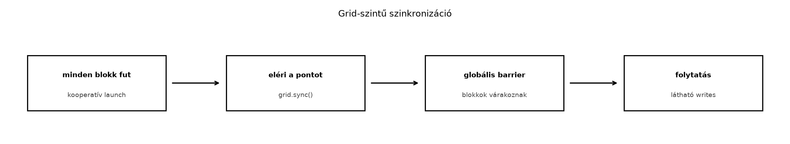

A hagyományos CUDA-végrehajtási modellben a grid blokkjai alapvetően független egységek. A GPU-ütemező tetszőleges sorrendben, átlapolva, sőt akár több kernelhullámban is futtathatja őket. Ez a lazítás adja a hardver skálázhatóságát, ugyanakkor azt is jelenti, hogy a blokkok között közvetlen, biztonságos szinkronizáció nincs: az egyetlen garantált határvonal a kernel vége. Sok algoritmus azonban szeretne a blokkok között is együttműködni anélkül, hogy a kernelből ki kellene lépnie. A Cooperative Groups eszköztára erre a problémára kínál megoldást a kooperatív launch és a grid-szintű szinkronizáció formájában.

A klasszikus <<<grid, block>>>
indításnál a CUDA futásidő nem garantálja, hogy a grid összes blokkja
egyszerre rezidens az eszközön. Ha a grid mérete meghaladja a GPU
aktuálisan elhelyezhető blokkszámát, a hardver hullámokban futtatja a
blokkokat: amint egy blokk befejeződik, a felszabaduló erőforrásra új
blokk kerül. Ezért ha egy kernelben megpróbálnánk egy olyan barrier-t
használni, amelyre a grid minden blokkjának meg kell érkeznie, az
könnyen deadlockhoz vezetne: a még nem ütemezett blokkok soha nem
érkeznek meg, a már futók pedig végtelenül várakoznak.
A kooperatív launch ezt a korlátot úgy oldja fel, hogy a futásidőtől kifejezetten azt kéri, hogy a teljes gridet egyszerre helyezze el az eszközön. A hardver és a driver ilyenkor garantálja, hogy minden blokk egyszerre fut, tehát a grid-szintű barrier biztonságosan használható.
grid.sync() feloldódik, 12 blokknál holtpont (kooperatív
indításnál cudaErrorCooperativeLaunchTooLarge); szemléltető
kapacitásA kooperatív launch (angolul cooperative launch, magyarul
kooperatív indítás; a könyv a két alakot azonos jelentéssel használja)
olyan kernelindítás, amelynél a futásidő garantálja, hogy a grid összes
blokkja egyszerre rezidens. A gyakorlatban ezt a
cudaLaunchCooperativeKernel API hívással valósítjuk meg a
szokásos <<< >>> szintaxis helyett. A két
indítási mód közötti legfontosabb különbség az ütemezési garancia: a
kooperatív launch megköveteli, hogy a teljes grid rezidens legyen, ezért
a grid méretét a kernel erőforrás-igénye és az eszköz kapacitása
korlátozza.
A kooperatív launch nem csupán egy újabb indítási függvény, hanem egy szerződés a programozó és a futásidő között. A programozó vállalja, hogy:
Cserébe a futásidő garantálja, hogy a blokkok egyszerre rezidensek,
így a grid.sync() hívás deadlock nélkül végrehajtható.
grid.sync()
szemantikájaA Cooperative Groups névterében a cg::this_grid() egy
grid_group objektumot ad vissza, amely a teljes gridet
reprezentálja. Ennek sync() tagfüggvénye egy grid-szintű
barrier: a hívás akkor tér vissza, ha a grid minden szála elérte
ugyanazt a pontot. Ez nem egyszerűen blokkok közötti, hanem szálak
közötti szinkronizáció, tehát minden szálnak részt kell vennie
benne.
A grid.sync() hasonlóan viselkedik, mint a blokk-szintű
__syncthreads(), csak a teljes gridre kiterjesztve. A
legfontosabb szabályok:
Minden szálnak hívnia kell. Ha a grid bármelyik
szála nem éri el a sync() hívást, a többi szál örökre
várakozni fog. Ezért a grid.sync() nem lehet feltételes
ágban, hacsak a feltétel nem igaz minden szálra. A warp-szintű
divergencia önmagában még nem feltétlenül okoz gondot, ha a divergens
ágak végül mind elérik a hívást, de a blokkok vagy szálak eltérő
vezérlési útvonala, korai visszatérése vagy kilépése garantáltan
deadlockhoz vezet.
A hívás csak kooperatív launch esetén érvényes.
A cg::this_grid() és annak sync() függvénye
kizárólag olyan kernelben használható, amelyet
cudaLaunchCooperativeKernel indított. A hagyományos
<<< >>> indításnál a
this_grid().sync() a kernel megszakításához
(cudaErrorLaunchFailure, sticky hiba) vezet; a
grid.is_valid() lekérdezéssel a kernel előre ellenőrizheti,
hogy kooperatív indítással fut-e (a lektor NVRTC/RTX-es ellenőrzése
szerint, CUDA 13 fejlécekkel; a pontos viselkedés Toolkit-verziófüggő
lehet).
A memória-láthatóság garantált. A
grid.sync() a végrehajtás szinkronizálásán túl
memória-fence-et is tartalmaz, ezért a barrier előtt a global memóriába
írt értékek a barrier után a grid minden szál számára láthatóak. Barrier
nélkül a láthatósághoz a fence önmagában nem elég: fence és atomikus
jelző együtt kell (író oldalon adat → __threadfence() →
jelző atomikus beállítása). A grid.sync() mellett erre
általában nincs szükség.
Nincs részleges sync. A grid.sync()
nem szinkronizálja külön a blokkok egy részét; mindig a teljes gridre
vonatkozik. Ha csak néhány blokk közötti szinkronizációra van szükség,
akkor a Cooperative Groups más csoportjait (például
cluster_group) kell használni, nem a teljes
gridet.
Mielőtt kooperatív launchot használnánk, ellenőriznünk kell, hogy az
adott eszköz támogatja-e egyáltalán. Ezt a
cudaDevAttrCooperativeLaunch eszközattribútummal tehetjük
meg:
int supported = 0;
cudaDeviceGetAttribute(&supported, cudaDevAttrCooperativeLaunch, device_id);
if (!supported) {
// az eszköz nem támogatja a kooperatív launchot
}A hardveres támogatás a gyakorlatban a compute capability 6.0-tól felfelé jellemző, de a pontos feltételt mindig lekérdezéssel kell igazolni, mert egyes beágyazott vagy virtualizált környezetekben a támogatás hiányozhat.
A második feltétel a grid méretére vonatkozik. A kooperatív launch során a grid összes blokkjának egyszerre rezidensnek kell lennie, ezért a grid mérete nem haladhatja meg a kernelre és az eszközre jellemző maximális együttműködő blokkszámot. Ezt a következőképpen számíthatjuk ki:
int num_sms = 0;
cudaDeviceGetAttribute(&num_sms, cudaDevAttrMultiProcessorCount, device_id);
int max_blocks_per_sm = 0;
cudaOccupancyMaxActiveBlocksPerMultiprocessor(
&max_blocks_per_sm, kernel, block_size, 0);
int max_cooperative_blocks = num_sms * max_blocks_per_sm;A cudaOccupancyMaxActiveBlocksPerMultiprocessor a kernel
tényleges erőforrás-igényét (regiszterek, shared memory) veszi
figyelembe, ezért ez a szám nem állandó, hanem kernel- és
blokkméret-függő. Ha a grid mérete ennél nagyobb, a
cudaLaunchCooperativeKernel hívás
cudaErrorCooperativeLaunchTooLarge hibakóddal tér vissza,
és a kernelt nem indítja el.
A harmadik feltétel magára a kernel szerkezetére vonatkozik. A
kernelben a grid.sync() hívást minden szál eléri, és a
hívás előtt nem lehet olyan vezérlési útvonal, amely egyes szálakat
kihagy. A grid.sync() után a kernel feltételezheti, hogy a
grid minden szála elvégezte a barrier előtti munkáját, és annak global
memóriába írt eredménye látható; ez csak akkor igaz, ha a munkát valóban
a barrier előtt végezték el.
Végül a kooperatív launch használatához a megfelelő API-t kell hívni;
a <<< >>> szintaxis nem váltja ki
ugyanazt az ütemezési garanciát. A
cudaLaunchCooperativeKernel szignatúrája a következő:
template<class T>
cudaError_t cudaLaunchCooperativeKernel(
T kernel,
dim3 grid_dim,
dim3 block_dim,
void **args,
size_t shared_mem = 0,
cudaStream_t stream = 0);Az args egy void* mutatókból álló tömb,
amelyben minden elem a kernel egy-egy paraméterére mutat. Gyakori hiba,
hogy a programozó a paraméter értékét adja át a paraméterre mutató
pointer helyett, vagy elfelejti a void** típusú tömböt
helyesen felépíteni.
A kooperatív launch és a grid.sync() hatékony eszköz, de
nem minden feladatra való. A következő helyzetekben érdemes elkerülni
vagy alaposan megfontolni a használatát:
Túl nagy grid. Ha az algoritmus természetes blokkszáma meghaladja a maximális együttműködő blokkszámot, a kooperatív launch nem használható közvetlenül. Ilyenkor vagy csökkenteni kell a blokkszámot (például grid-stride loop segítségével több adatelemet adva egy blokknak), vagy fel kell darabolni a feladatot több kernelre.
Gyakori, finomszemcsés szinkronizáció. A
grid.sync() drága művelet: a leggyorsabb blokkok várakozni
kényszerülnek, és a barrier megszünteti a blokkok közötti természetes
átlapolást. Ha egy algoritmus nagyon gyakran, például minden kis
lépésben grid-szintű szinkronizációt igényel, a teljesítmény jelentősen
romolhat. Ilyenkor érdemes megvizsgálni, hogy a szinkronizáció
kiváltható-e kernel-határokkal, atomi műveletekkel vagy más, kevésbé
korlátozó mechanizmussal.
Nem determinisztikus kilépés. Ha a kernelben a
blokkok kilépése nem egyenletes, vagy egyes blokkok korán befejezhetik a
munkájukat anélkül, hogy elérnék a grid.sync() hívást, a
barrier deadlockhoz vezet. A kooperatív kernelben minden blokknak el
kell jutnia a sync pontig.
Hosszú futású vagy watchdog által figyelt kernelek. A kooperatív launch sem szünteti meg a GPU watchdog timeoutját. Ha a kernel hosszú ideig várakozik egy barrier-nél, a rendszer leállíthatja a kernelt. Különösen igaz ez asztali környezetekben, ahol a kijelző-kezelő watchdogja aktív.
Több GPU esetén. A grid.sync()
alapértelmezésben csak az adott eszköz gridjét szinkronizálja. Ha több
GPU között szeretnénk szinkronizálni, az újabb CUDA-verziókban nincs
támogatott megoldás: a
cudaLaunchCooperativeKernelMultiDevice és a
multi_grid_group a CUDA 11.3-tól elavult, a CUDA 13-ban
eltávolítva. Több GPU összehangolását kernelhatárokon,
streameken/eseményeken vagy kommunikációs könyvtáron (pl. NCCL) át
érdemes megoldani.
Ha nincs valódi szükség a grid-szintű együttműködésre. Ha a feladat természetesen particionálható független blokkokra, a kooperatív launch csak felesleges korlátozást jelent. A hagyományos indítás rugalmasabb, és jobban kihasználja a GPU ütemezőjét.
Az alábbi példa egy olyan kernelt mutat be, amelyben minden blokk
kiírja a saját azonosítóját egy globális tömbben, majd egy grid-szintű
barrier után minden blokk ellenőrzi, hogy a teljes tömb helyesen
kitöltött-e. Ha a grid.sync() nem működne, a blokkok egy
része még nem látná a többi blokk írását, és hibát jelezne.
A példa CUDA C++ nyelvű, és feltételezi a
cooperative_groups fejlécet. A kernel paraméterei:
values: globális memóriában lévő tömb, mérete a grid
blokkszámával egyenlő,errors: egyetlen egész szám, amelybe a hibák számát
gyűjtjük atomi módon.#include <cuda_runtime.h>
#include <cooperative_groups.h>
#include <cstdio>
#include <cstdlib>
#include <vector>
namespace cg = cooperative_groups;
#define CUDA_CHECK(call) \
do { \
cudaError_t err_ = (call); \
if (err_ != cudaSuccess) { \
std::fprintf(stderr, "CUDA hiba %s:%d: %s\n", __FILE__, \
__LINE__, cudaGetErrorString(err_)); \
std::exit(EXIT_FAILURE); \
} \
} while (0)
__global__ void grid_sync_kernel(int *values, int *errors) {
int tid = threadIdx.x;
int bid = blockIdx.x;
int block_count = gridDim.x;
// Minden blokk 0. szála kiírja a saját blokkazonosítóját.
if (tid == 0) {
values[bid] = bid;
}
// Grid-szintű barrier: minden szál minden blokkban eléri ezt a pontot.
cg::this_grid().sync();
// A sync után minden blokk 0. szála ellenőrzi a teljes tömböt.
if (tid == 0) {
int local_errors = 0;
for (int i = 0; i < block_count; ++i) {
if (values[i] != i) {
++local_errors;
}
}
if (local_errors > 0) {
atomicAdd(errors, local_errors);
}
}
}
int main() {
int device_id = 0;
CUDA_CHECK(cudaSetDevice(device_id));
// 1. Ellenőrizzük a kooperatív launch támogatását.
int coop_supported = 0;
CUDA_CHECK(cudaDeviceGetAttribute(&coop_supported,
cudaDevAttrCooperativeLaunch,
device_id));
if (!coop_supported) {
std::fprintf(stderr,
"Az eszköz nem támogatja a kooperatív launchot.\n");
return 1;
}
// 2. Meghatározzuk a maximális együttműködő blokkszámot.
const int block_size = 128;
int num_sms = 0;
CUDA_CHECK(cudaDeviceGetAttribute(&num_sms,
cudaDevAttrMultiProcessorCount,
device_id));
int max_blocks_per_sm = 0;
CUDA_CHECK(cudaOccupancyMaxActiveBlocksPerMultiprocessor(
&max_blocks_per_sm,
grid_sync_kernel,
block_size,
0));
int grid_size = num_sms * max_blocks_per_sm;
if (grid_size == 0) {
std::fprintf(stderr, "Nem fér el egyetlen blokk sem az SM-en.\n");
return 1;
}
// 3. Lefoglaljuk a device memóriát.
std::vector<int> h_values(grid_size, -1);
int *d_values = nullptr;
int *d_errors = nullptr;
CUDA_CHECK(cudaMalloc(&d_values, grid_size * sizeof(int)));
CUDA_CHECK(cudaMalloc(&d_errors, sizeof(int)));
CUDA_CHECK(cudaMemcpy(d_values,
h_values.data(),
grid_size * sizeof(int),
cudaMemcpyHostToDevice));
CUDA_CHECK(cudaMemset(d_errors, 0, sizeof(int)));
// 4. Kooperatív launch.
void *args[] = { &d_values, &d_errors };
CUDA_CHECK(cudaLaunchCooperativeKernel(
(void*)grid_sync_kernel,
dim3(grid_size),
dim3(block_size),
args,
0,
0));
// 5. Szinkronizálunk: a futás közbeni hibákat is ez jelzi.
CUDA_CHECK(cudaGetLastError());
CUDA_CHECK(cudaDeviceSynchronize());
// 6. Visszaolvassuk az eredményt.
int h_errors = 0;
CUDA_CHECK(cudaMemcpy(&h_errors,
d_errors,
sizeof(int),
cudaMemcpyDeviceToHost));
std::printf("grid_size=%d, errors=%d\n", grid_size, h_errors);
CUDA_CHECK(cudaFree(d_values));
CUDA_CHECK(cudaFree(d_errors));
return (h_errors == 0) ? 0 : 1;
}A kódban a cudaOccupancyMaxActiveBlocksPerMultiprocessor
hívással a kernel tényleges erőforrás-igénye alapján számoljuk ki a
maximális blokkszámot. A kernelben nincs shared memória, és a
regiszterhasználat alacsony, ezért a legtöbb modern GPU-n sok blokk fér
el egyszerre.
A kernel belsejében a values[bid] = bid írást a blokk 0.
szála végzi. Mivel a blokk többi szála nem fér hozzá ehhez az értékhez a
grid.sync() előtt, nincs szükség blokk-szintű
__syncthreads()-re. A grid.sync() ezután
garantálja, hogy az írás a grid minden szál számára láthatóvá válik,
mielőtt a blokkok ellenőrzik a tömb tartalmát.
A kód fordításához és futtatásához a következő parancsok használhatók
(a sm_80 egy példa, a tényleges architektúrához
igazítandó):
nvcc -std=c++17 -arch=sm_80 -O3 -o grid_sync grid_sync.cu
timeout 60 ./grid_syncA grid.sync() a CUDA 9–10-ben szeparált fordítást
igényelt (-rdc=true); a CUDA 11.0-tól erre nincs szükség, a
fenti parancs elegendő (a verzióhatárt a CUDA 11.0 kiadási jegyzetéből
rögzítendő; ellenőrzendő). A példát nem futtattuk, nincs mért
eredménye.
Az alábbi mérési napló szemléltető minta, nem valós
hardveres eredmény. A konkrét értékeket minden környezetben külön kell
rögzíteni, A labor kódja csak a helyességet ellenőrzi (hibaszámláló),
időt nem mér; ha futásidő is kell, a mérést a könyv mérési protokollja
szerint (legalább 5 warm-up, legalább 20 ismétlés,
cudaEvent, medián és IQR) kell hozzáadni, minden ismétlés
előtt cudaMemset(d_errors, 0, sizeof(int)) hívással.
| Paraméter | Érték (kitöltendő) |
|---|---|
| GPU modell | NVIDIA [helyőrző, pl. A100] |
| Driver verzió | [helyőrző] |
| CUDA verzió | [helyőrző, pl. 12.x] |
| Compute capability | [helyőrző, pl. 8.0] |
| Blokkméret | 128 |
| Grid méret | num_sms * max_blocks_per_sm |
| Shared memória (statikus) | 0 |
| Várt hiba | 0 |
| Mért hiba | [kitöltendő] |
A példa akkor tekinthető sikeresnek, ha a h_errors
értéke 0. Ha a grid.sync() nem működne, a blokkok egy része
nem látná a többi blokk írását, és a hibaszámláló nullától eltérő
értéket mutatna. Ha viszont a kernelt
<<< >>>-sel indítanánk, a
grid.sync() nem hibás számot ad, hanem a kernelt
megszakítja: a cudaDeviceSynchronize()
cudaErrorLaunchFailure hibát jelez (sticky hiba, a
folyamatot újra kell indítani).
A kooperatív launch és a grid-szintű szinkronizáció során a következő hibák fordulnak elő leggyakrabban:
cudaErrorCooperativeLaunchTooLarge:
a grid mérete meghaladja a maximális együttműködő blokkszámot. Ilyenkor
csökkenteni kell a grid méretét, vagy módosítani a kernelt (például
grid-stride loop használatával), hogy kevesebb blokk is elvégezze
ugyanazt a munkát.
A kernel lefagy (deadlock): a legtöbbször az
okozza, hogy nem minden szál éri el a grid.sync() hívást.
Ellenőrizni kell, hogy a sync hívás nincs-e feltételes ágban, korai
visszatérés mögött, vagy olyan ciklusban, amelyből egyes szálak
kilépnek. A hibakereséshez a
compute-sanitizer --tool synccheck (érvénytelen
szinkronizáció) és a cuda-gdb használható (a
racecheck shared memória adatversenyeket keres, holtpontot
nem), de a legegyszerűbb első lépés a vezérlési útvonalak
átvizsgálása.
A cg::this_grid() használata hagyományos
launch esetén: ha a kernelt
<<< >>>-sel indítjuk, a
this_grid().sync() a kernel megszakításához
(cudaErrorLaunchFailure) vezet; a
grid.is_valid() előre ellenőrizheti a kooperatív indítást.
A megoldás az, hogy a kernelt
cudaLaunchCooperativeKernel-nel kell indítani.
Hibás argumentum-átadás a
cudaLaunchCooperativeKernel hívásban: az
args tömbnek a kernel paramétereire mutató pointereket kell
tartalmaznia. Ha például egy int* paramétert adunk át,
akkor az args eleme &d_ptr legyen, nem
pedig d_ptr.
Memória-láthatóság feltételezése szinkronizáció
nélkül: bár a grid.sync() biztosítja a
memória-fence-et, ha a blokkok a szinkronizáció után is írnak a global
memóriába, és egy másik szál szinkronizáció nélkül olvassa azt, az
eredmény nem garantált. Ilyenkor újabb grid.sync() kell;
barrier nélküli kommunikációhoz a fence önmagában nem elég, hanem író
oldalon adat → __threadfence() → atomikus jelző beállítása,
olvasó oldalon a jelző atomikus olvasása → __threadfence()
→ adat mintát kell használni (lásd a memóriamodell fejezetét).
Elhanyagolt hibakezelés: a kooperatív launch
esetén is kötelező minden CUDA API-hívás visszatérési értékét
ellenőrizni, és a cudaDeviceSynchronize után a
cudaGetLastError-t is lehívni. A hibás kernel lefagyhat,
ezért a fejlesztés során érdemes timeoutot és visszaállítási tervet
használni.
Mi történik akkor, ha egy kooperatív indításra szánt kernelben a grid
mérete meghaladja a
cudaOccupancyMaxActiveBlocksPerMultiprocessor és az SM-ek
számának szorzatát? Milyen hibakódot kapunk, és hogyan javítható a
helyzet?
Válasz: A cudaLaunchCooperativeKernel
hívás cudaErrorCooperativeLaunchTooLarge hibakóddal tér
vissza, és a kernel nem indul el. A javításhoz vagy csökkenteni kell a
grid méretét (például grid-stride loop alkalmazásával, hogy kevesebb
blokk dolgozzon fel több adatot), vagy csökkenteni kell a blokkonkénti
erőforrás-igényt (például kevesebb regiszter vagy shared memory
használatával), így több blokk fér el egyszerre az SM-eken.